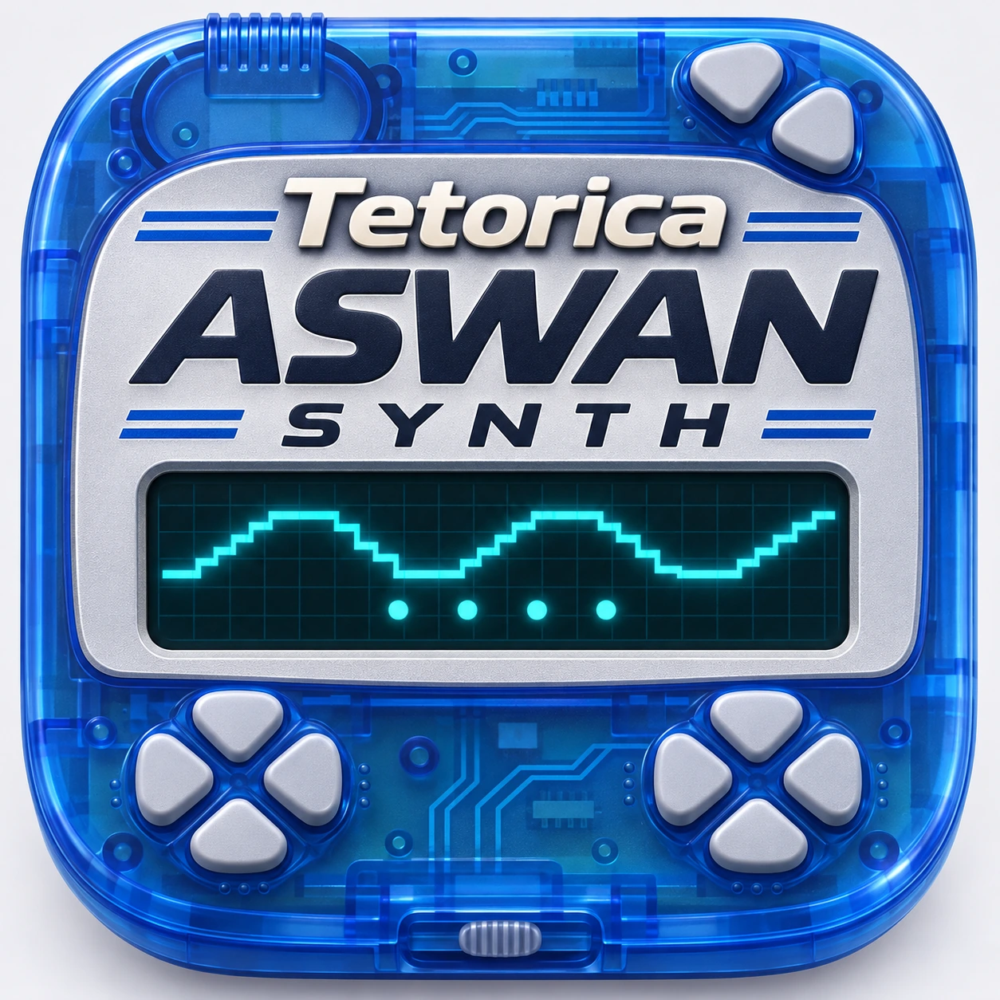

WAVETABLE · SWEEP · NOISE · VOICE PCM
Tetorica ASWAN Synth
WonderSwan · Draw a wave. Explore four voices. Take the code.
Enable audio, then play the keyboard. Editing does not start audio.
?
Import from Menu or Files. VGM reference playback and Code run one at a time. Pause preserves the heard position; Resume continues it. Choose a CH and enable Auto update to observe the recorded hardware settings. Select a complete Wave, Sweep or Noise CH to edit and play it while the song continues. Live keys use normal MIDI pitches. While paused, Reference key C4 matches the frozen recorded base frequency. Resume keeps the same song position; already generated audio plays first, then the edits take effect. Later VGM writes can replace edited hardware settings. Copy to Auto takes the edited sound into your instrument. The first version plays a single WonderSwan chip once; unsupported chips, HyperVoice and DMA are reported.
Add a VGM / VGZ to hear a reference performance.
Sounds from VGM
Import a VGM from Menu, then choose a sound.
?
Imported waveforms, Sweep and Noise settings are saved to Files/presets/. Opening music keeps your current instrument. Software Envelope is disabled for imported sounds. A static sound does not include the game's later register changes. Supported recorded Voice PCM can also be extracted; unsupported or incomplete data is explained.
?
Briefly highlight changed controls while following a VGM or Code channel. Turning this off reduces visual updates. The setting is remembered on this device; it does not change sound.
Auto edits the common instrument and allocates Wave notes across four channels. Sweep uses CH3, Noise uses CH4 and Voice PCM uses CH2. A CH selects that physical voice for display, editing and keyboard input. Selecting a tab does not copy its settings to other channels. Code and keys share one chip; the most recent note owns its gate. During VGM playback, Auto update follows the recorded CH. Turn it off to freeze the display; manual edits still write to the running chip and update their fields. Live Wave, stereo volume, Sweep and Noise edits do not stop playback. Software Envelope is unavailable on this reference hardware. Keyboard notes write pitch and gate directly to the selected CH. A later VGM frequency write takes over pitch; a full control-register write takes over gates, so an old KeyUp cannot cut the game's new note. Buffered audio adds a small control delay. While paused, keyboard audition uses a private voice on this same audio output, preserving Auto and the song position. Edits stay on each CH until Resume or Seek. Hardware edits carry into Resume; Software Envelope only shapes the audition and saved preset. Its short default release avoids a hard keyboard gate. Wave/Sweep phases restart on audition notes; elapsed hardware phase is not captured. Keys transpose the recorded base frequency relative to Reference key, clamped to the hardware range. A transient PCM DAC byte or unknown Wave RAM is unavailable for audition; import complete PCM samples through Sounds from VGM. Private paused audition requires the normal 3072000 Hz clock; live manual input uses the song's clock.
Auto · four waveform voices · round robin.
Live output after Master volume.
Sound source
Wave · four voices
ASWAN Mixer
Channel output switches apply to the instrument and VGM reference. Master adjusts the final mixed output.
Software performance · this same ASWAN chip. Run: Ctrl/Cmd+Enter · Apply: Ctrl/Cmd+Shift+Enter.
Code is saved in Files. Restoring a project never runs it.
Console
?
Use
const ws = await useSoundChip("wonderswan") and
await its methods. CH1–CH4 are physical channels. noteOn /
noteOff use the authored Software Envelope; keyOn / keyOff
are raw gates. Run starts fresh, Apply retains context and
named loops. Changing tabs or editing a sound keeps Code
running. Click outside the editor to play computer keys.
Voice PCM supply, Envelope, scheduling and liveFx are
software; Sweep and Noise are hardware.